Early Letters wordmark, round 2
Typographer T1 (wordmark). Four routes, each with a master cut (above 32 px) and a small cut (32 px and below). All shapes are outlined, hand-edited paths from OFL fonts. Sizes are the full height of the drawing, cap top to descender.
Recommendation: route A, Signature
Literata at a display optical size, spaced by eye rather than by the font's kerning, with one custom detail: the two t's in "Letters" share a single crossbar, and the first t stands a little taller than the second. A tall letter and a small one holding the same line. At 32 px and below a sturdier small cut takes over. Full reasoning in RATIONALE.md.
The four routes at one size
A. Signature
Literata at a display optical size, optically spaced, one crossbar shared by a tall t and a small t.
387 nodes in the master, 387 in the small cut

Master cut, real pixels at 28 and 14 px, shown 4x
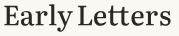
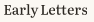
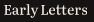
Small cut, real pixels at 28 and 14 px, shown 4x

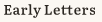

B. Fine
Literata at its largest optical size and a lighter weight: more contrast, a book-jacket cut.
387 nodes in the master, 387 in the small cut

Master cut, real pixels at 28 and 14 px, shown 4x
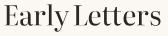
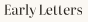
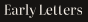
Small cut, real pixels at 28 and 14 px, shown 4x
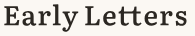

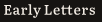
C. Spaced small caps
Capitals and true small caps, generously spaced, like a title page or a book spine.
439 nodes in the master, 439 in the small cut
Master cut, real pixels at 28 and 14 px, shown 4x
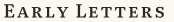
Small cut, real pixels at 28 and 14 px, shown 4x
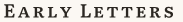
D. Garamond (alternative OFL serif)
EB Garamond with its historical tt ligature: the warmest, oldest voice, at the cost of family with the app.
568 nodes in the master, 568 in the small cut
Master cut, real pixels at 28 and 14 px, shown 4x
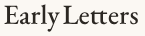
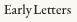
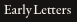
Small cut, real pixels at 28 and 14 px, shown 4x
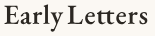
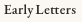
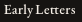
Email header, 28 px tall
The small cut of each route, as it would sit at the top of a family email.
A letter is waiting for Asha
Nani recorded a letter for Asha this evening. It is kept exactly as she said it.
A. Signature
A letter is waiting for Asha
Nani recorded a letter for Asha this evening. It is kept exactly as she said it.
B. Fine
A letter is waiting for Asha
Nani recorded a letter for Asha this evening. It is kept exactly as she said it.
C. Spaced small caps
A letter is waiting for Asha
Nani recorded a letter for Asha this evening. It is kept exactly as she said it.
D. Garamond (alternative OFL serif)